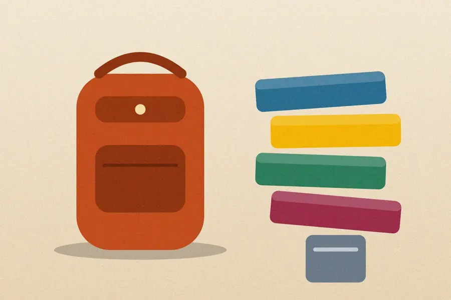

Como arrumar a mochila de viagem

Neste guia
- Escolha da mochila
- Distribuição do peso
- Lista final
Escolha peças que combinam
Separe roupas pelo número de dias e pela previsão do tempo. Prefira peças que possam formar mais de um conjunto. Vista durante o deslocamento o calçado e o casaco mais pesados.
Distribua o peso perto das costas
Coloque itens densos no centro da mochila, próximos ao corpo. Objetos leves ficam nas extremidades. Use organizadores para separar roupas limpas, usadas e itens de higiene.
Confira antes de fechar
Documentos, remédios de uso pessoal e carregadores devem ficar acessíveis. Retire itens duplicados e deixe espaço para algo adquirido no caminho.
Se a viagem inclui avião, consulte também o que levar na mala de mão.